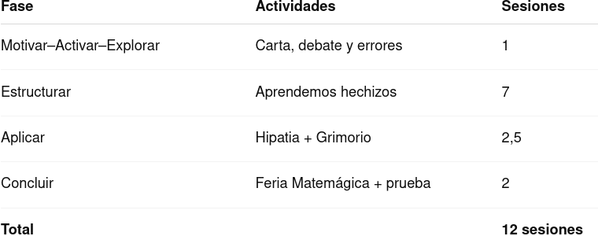

Justificación didáctica
Esta situación de aprendizaje se fundamenta en los siguientes principios pedagógicos:
- Aprendizaje Basado en Proyectos (ABP): el alumnado investiga, aplica conocimientos y produce un producto final con sentido.
- Gamificación: la narrativa de Harry Potter incrementa la motivación intrínseca y favorece la implicación activa.
- Aprendizaje cooperativo: trabajo en equipos heterogéneos con roles definidos.
- Evaluación formativa y competencial: se valora el proceso, el producto y la reflexión.
- Perspectiva de género: visibilización de Hipatia como referente femenino en matemáticas.
- Gestión emocional del error: el error se presenta como oportunidad de mejora.
🌍 Objetivos de Desarrollo Sostenible trabajados
- ODS 4 – Educación de calidad: aprendizaje significativo, inclusivo y equitativo.
- ODS 5 – Igualdad de género: visibilización del papel de Hipatia de Alejandría como mujer matemática.

Temporización

Producto final: el Grimorio
El Grimorio de las Potencias y Raíces es un producto digital (o analógico) cooperativo en el que el alumnado:
- Investiga una aplicación real de potencias o raíces.
- Aplica correctamente los conceptos matemáticos.
- Explica el proceso de forma clara.
- Relaciona las matemáticas con la mejora del mundo real.
- Presenta el contenido de manera creativa mediante un “hechizo”.
Este producto permite evaluar competencias matemáticas, digitales, comunicativas y sociales de forma integrada.
Rúbrica de evaluaión del producto final por parte del profesorado
| 5.- Excelente | 4.- Avanzado | 3.- Adecuado | 2.- Básico | 1.- Inicial | |
|---|---|---|---|---|---|
| MAT.3.1.1 - Interpretar y resolver problemas | Interpreta el problema con total precisión y profundidad (2.5) | Interpreta correctamente el problema (1.75) | Interpreta el problema con pequeños errores (1.25) | Interpretación incompleta o confusa (0.75) | No comprende el problema planteado (0.1) |
| MAT.3.2.2 - Validez matemática de la solución | Solución correcta, coherente y contextualizada (2.5) | Solución correcta con leves imprecisiones (1.75) | Solución parcialmente correcta (1.25) | Errores matemáticos relevantes (0.75) | Solución incorrecta o inexistente (0.1) |
| MAT.3.5.1 - Uso de conexiones matemáticas | Conecta conceptos de forma clara y profunda (2.5) | Establece conexiones adecuadas (1.75) | Conexiones básicas (1.25) | Conexiones poco claras (0.75) | No establece conexiones (0.1) |
| MAT.3.7.1 - Representación digital (sólo aplica si se crea un producto digital) | Presentación clara, creativa y muy bien estructurada (2.5) | Presentación clara y correcta (1.75) | Presentación adecuada (1.25) | Presentación poco clara (0.75) | Presentación deficiente (0.1) |
| MAT.3.10.1 - Trabajo cooperativo | Participación activa y responsable (2.5) | Participación adecuada (1.75) | Participación irregular (1.25) | Participación escasa (0.75) | No colabora (0.1) |
- Actividad
- Nombre
- Fecha
- Puntuación
- Notas
- Reiniciar
- Imprimir
- Aplicar
- Ventana nueva
Rúbrica de coevaluación para una exposición oral
| 4 Excelente | 3 Satisfactorio | 2 Mejorable | 1 Insuficiente | |
|---|---|---|---|---|
| Habla | Habla despacio y con gran claridad. (4) | La mayoría del tiempo, habla despacio y con claridad. (3) | Unas veces habla despacio y con claridad, pero otras se acelera y se le entiende mal. (2) | Habla rápido o se detiene demasiado a la hora de hablar. Además su pronunciación no es buena. (1) |
| Vocabulario | Usa vocabulario apropiado para la audiencia. Aumenta el vocabulario de la audiencia definiendo las palabras que podrían ser nuevas para ésta. (4) | Usa vocabulario apropiado para la audiencia. Incluye 1-2 palabras que podrían ser nuevas para la mayor parte de la audiencia, pero no las define. (3) | Usa vocabulario apropiado para la audiencia. No incluye vocabulario que podría ser nuevo para la audiencia. (2) | Usa varias (5 o más) palabras o frases que no son entendidas por la audiencia. (1) |
| Volumen | El volumen es lo suficientemente alto para ser escuchado por todos los miembros de la audiencia a través de toda la presentación. (4) | El volumen es lo suficientemente alto para ser escuchado por todos los miembros de la audiencia al menos 90% del tiempo. (3) | El volumen es lo suficientemente alto para ser escuchado por todos los miembros de la audiencia al menos el 80% del tiempo. (2) | El volumen con frecuencia es muy débil para ser escuchado por todos los miembros de la audiencia. (1) |
| Comprensión | El estudiante puede con precisión contestar casi todas las preguntas planteadas sobre el tema por sus compañeros de clase. (4) | El estudiante puede con precisión contestar la mayoría de las preguntas planteadas sobre el tema por sus compañeros de clase. (3) | El estudiante puede con precisión contestar unas pocas preguntas planteadas sobre el tema por sus compañeros de clase. (2) | El estudiante no puede contestar las preguntas planteadas sobre el tema por sus compañeros de clase. (1) |
| Postura del cuerpo y contacto visual | A la hora de hablar la postura y el gesto son muy adecuados. Mira a todos los compañeros con total naturalidad. (4) | La mayoría del tiempo la postura y el gesto son adecuados y casi siempre mira a los compañeros mientras habla. (3) | Algunas veces, mantiene la postura y el gesto adecuados, y otras no. En ocasiones mira a sus compañeros. (2) | No mantiene la postura y gesto propios de una exposición oral y, la mayoría de las veces, no mira a sus compañeros. (1) |
| Contenido | Demuestra un completo entendimiento del tema que expone. (4) | Demuestra un buen entendimiento del tema que expone. (3) | Demuestra un buen entendimiento de partes del tema que expone. (2) | No parece entender muy bien el tema que expone. (1) |
- Actividad
- Nombre
- Fecha
- Puntuación
- Notas
- Reiniciar
- Imprimir
- Aplicar
- Ventana nueva
Atención a la diversidad y DUA
La situación de aprendizaje se diseña bajo los principios del Diseño Universal para el Aprendizaje (DUA):
- Múltiples formas de representación: explicación oral, escrita, visual y digital.
- Múltiples formas de acción y expresión: cuaderno, exposición oral, producto digital.
- Múltiples formas de implicación: narrativa, roles cooperativos, elección del formato.
Medidas específicas:
- Adaptación del nivel de complejidad de tareas.
- Uso de apoyos visuales y ejemplos guiados.
- Trabajo cooperativo inclusivo.
- Valoración del progreso individual.
- Uso flexible del tiempo y herramientas digitales.